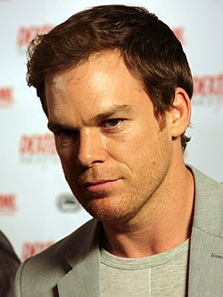

Michael C. Hall

Filmes
NosfetaruPagina Do Filme
Michael é conhecido por suas atuações em séries televisivas como Six Feet Under do canal HBO, atuando como David Fisher, e como Dexter Morgan na série Dexter do canal Showtime. Em 31 de Dezembro de 2008, Michael se casou com a atriz Jennifer Carpenter, que interpretava Debra Morgan, sua irmã no seriado Dexter. Em 13 de Dezembro de 2010, o casal anunciou sua separação.[1] Em 2009 venceu o Golden Globe Award para Melhor Ator (série dramática) em televisão e o SAG Award para Melhor Ator (série dramática) pelo seu papel na série Dexter. O ator fez tratamento contra o câncer, especificamente de Linfoma de Hodgkin, e anunciou que está completamente curado.